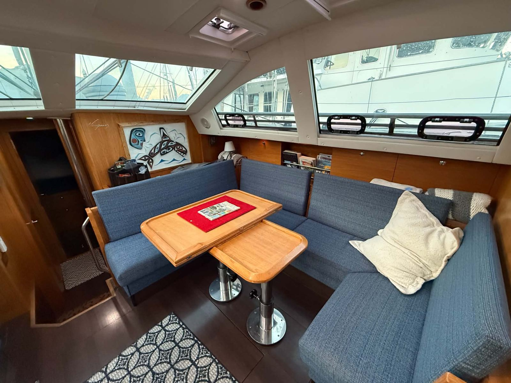
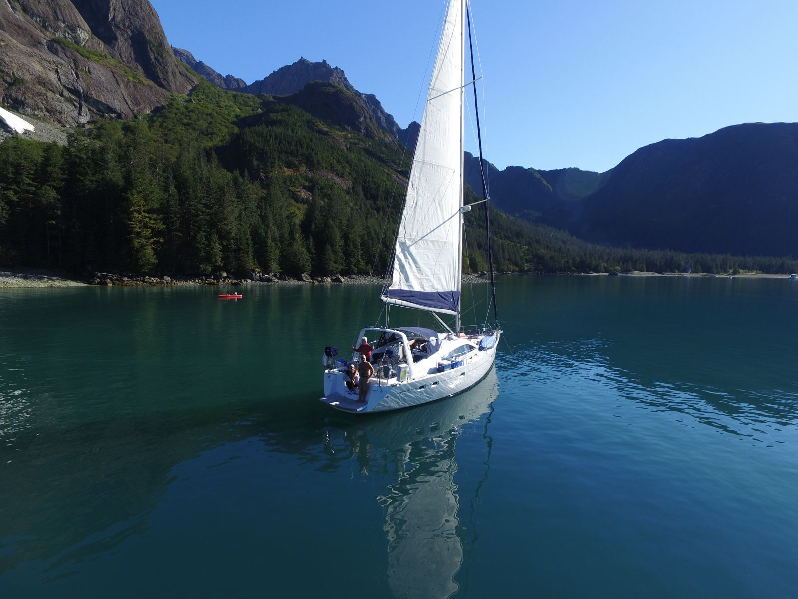
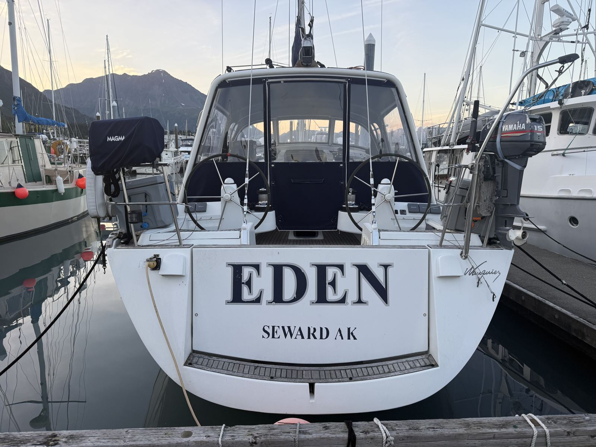
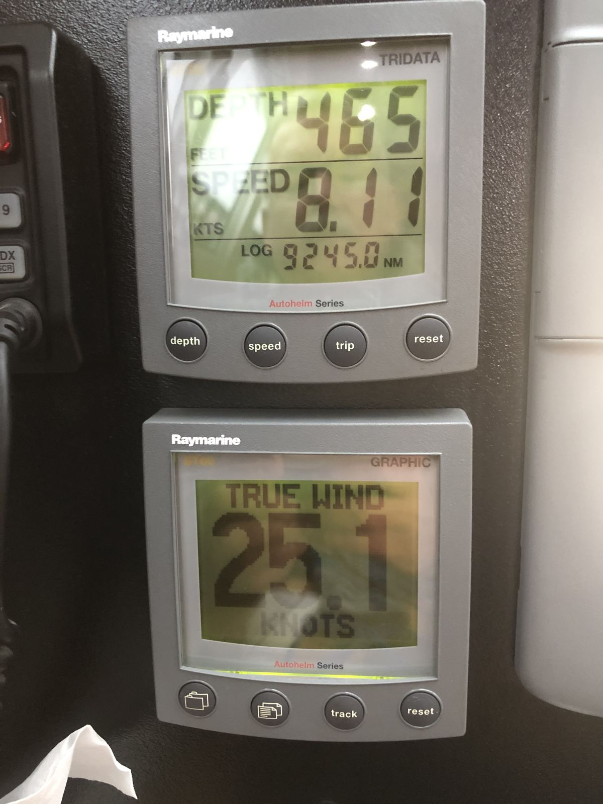
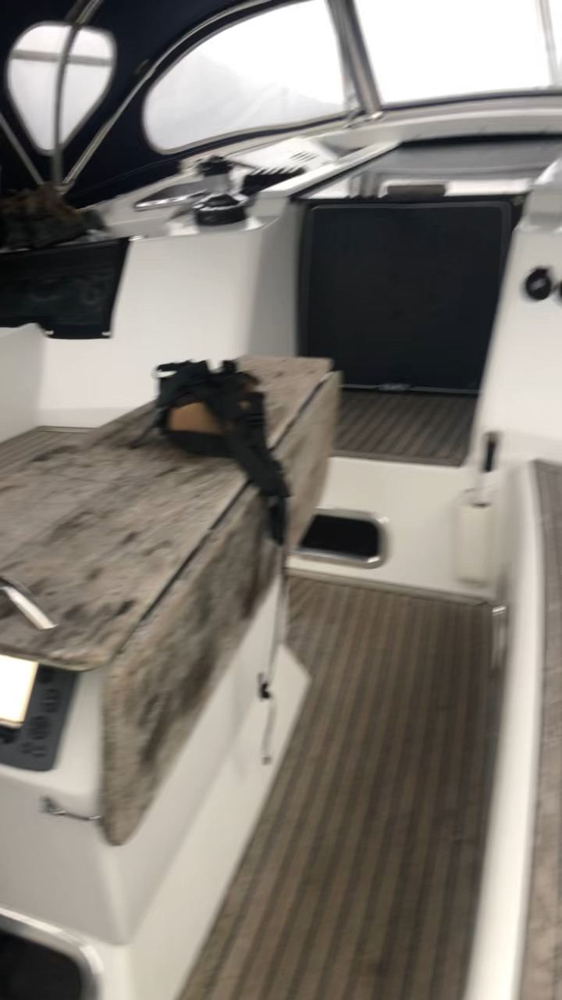
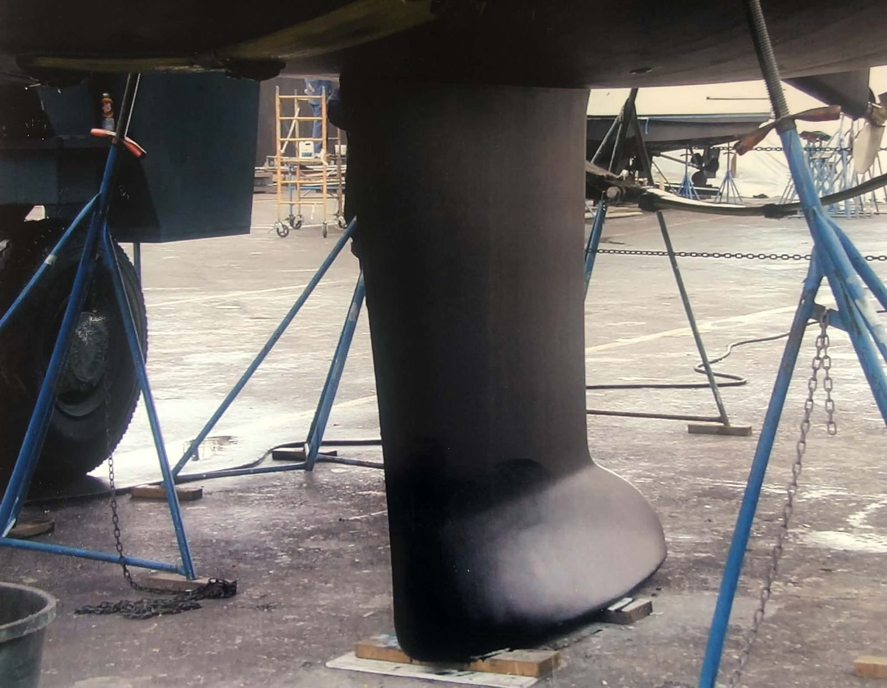

188
Displacement / length
On the class weight. A moderate cruising hull. At the survey’s 36,000 lb the same waterline moves the ratio to about 220, still moderate.
 Eden
Eden
2005 Wauquiez Pilot Saloon 47 · Hull 003 · Seward, Alaska
One family since the mold, twenty Alaska summers, and a private ask under her own insurance value.
Planning all-in loads with the page.
The boat
Eden is a Wauquiez Pilot Saloon 47, hull 003, HIN WAU470031505, USCG official number 1179844, documented for pleasure. Her home and hailing port is Seward, Alaska, and she lives in the Seward Small Boat Harbor. She was built in 2005. The family commissioned her for the 2006 Alaska season, which is why the project files called her a 2006 until the survey arrived. Berret-Racoupeau drew the hull. It is the same design as Paragon.
She is a private sale. There is no YachtWorld, Boat Trader, or SailboatListings page. The ask is $299,000, and the owner said on the phone that there is room to negotiate.
Nikki found her through an old Facebook Marketplace post, about three years stale and no longer public. The owner’s story, as told to us: the family bought a PS40 at the Seattle boat show, traded it when the PS47 launched, flew to France in 2005 to watch this hull come out of the mold, specified the interior, showed her at Annapolis and Seattle, commissioned her at CSR Marine in Seattle for electronics, heat, and systems, had sails made by Schattauer in Seattle, then took her north for summer 2006. One family from the mold.
Her season is mid-May to October. The rest of the year she is hauled and winterized. The owner says there have been no groundings or ice on Eden. The family’s earlier PS40 hit a rock. He says the boat is for sale partly because his insurer was leaving the business and wanted a survey on a twenty-year-old boat, which is hard to get done in Seward.
Marathon Marine Surveyor · file MMS.009.2026
Rex von Borstel of Marathon Marine Surveyor LLC inspected Eden in and out of the water at Seward Small Boat Harbor on 26 April 2026. The report is dated 2 May 2026 and runs 70 pages. It was prepared for the owner as a condition and value survey for reinsurance. It is not a pre-purchase survey.
The report says what it did not do. No sea trial. The HIN was taken from the papers, not verified on the hull. Engine internals were not evaluated, and the report recommends a qualified engine surveyor. Electronics were checked for power-up only. Nothing was removed or opened. Moisture was a Tramex Skipper walk-around that read zero. There is no map and there are no core plugs. On a twenty-year-old balsa-cored boat in an Alaska harbor, that is a screen, not a dry core. Almost every system line in the body reads “visually inspected and found to be in good condition.”
Fair market value $338,253. Replacement cost $650,000. The value is the average of two asking prices: a 2005 PS47 in Italy at $281,505 and a 2015 boat in the Seychelles at $395,000.
That is not a West Coast sold-boat set. It is useful as the number the owner’s insurer was willing to write. The ask sits under it.
Class design · Sailboatdata, and this hull’s survey weight
The ratios below are the published Pilot Saloon 47 class sheet, the same figures used on Paragon: 30,864 lb on a 41.83 ft waterline, sail area 1,132 sq ft. The survey prints a displacement of 36,000 lb, a beam of 15 ft 0 in, and a sail area of 1,131.54 sq ft with a sail area/displacement of 18.48, which is the class figure. The keel is not settled. The owner says deep. The survey header says “bulb or wing keel.” The haul-out photographs show a bulb. The factory drafts in the project brief are 7 ft 9 in deep and 5 ft 11 in shoal. Nobody has taped this one.
On the class weight. A moderate cruising hull. At the survey’s 36,000 lb the same waterline moves the ratio to about 220, still moderate.
1,132 sq ft on the class displacement, and the survey prints the same 18.48. At 36,000 lb the ratio would drop toward about 16.6. The instruments in the owner’s photos read 7.78 to 8.13 knots with 25 to 29 knots of true wind.
Class sheet, 8,931 lb of lead in 30,864 lb. The survey prints no ballast figure, and the keel on this hull is not measured. If she is the deep option, the class ballast is not necessarily hers.
Class beam 14.8 ft over the cube root of the class displacement. Under the common screen of 2.0. On the survey’s 15 ft and 36,000 lb it would be about 1.82.
Sailboatdata’s 30.38 for the class weight. Moderate on Brewer’s scale. The heavier survey weight would lift it toward about 35. It is not recomputed on the home chart.
1.34 × √LWL on 41.83 ft. A theoretical displacement speed, not a day’s run. The log in the instrument photos reads about 9,245 miles.
33 photographs · the owner’s set and the spring 2026 haul-out






Survey, then owner · owner claims are marked as his
The survey lists a Webasto forced-air diesel heater and hydronic units throughout the boat. The owner says seven zones and a backup, and that it rages. The 21 September call notes add that it was rebuilt and a spare is aboard. No air conditioning. This is the system Paragon does not have.
12 volt. Four Blue Sea house batteries and two start batteries in two banks. Charles 100 A charger. Xantrex Prosine 3.0 inverter. The owner says the AGM bank is new in spring 2026. Its capacity is not stated. No solar is listed anywhere. Shore power is 120 V, 35 A, and the galvanic isolator aboard does not convert 230 V 50 Hz.
One plastic tank, starboard midships, 172 US gallons. Water is one 162-gallon tank in the forward V-berth. Holding is one plastic tank, estimated at 40 gallons. The larger fuel tank is what makes the 472-mile Seward to Sitka hop less frightening. It does not make a fall crossing sane.
Side by side
| This boat, from the survey | |
|---|---|
| Name | Eden |
| Year, builder, model | 2005 Wauquiez Pilot Saloon 47, hull 003. Commissioned for the 2006 season |
| Identity | HIN WAU470031505, from papers. USCG 1179844, pleasure |
| Ask | $299,000, private, informal. Room to negotiate, per the owner |
| Where she is | Seward Small Boat Harbor, Alaska |
| LOA / beam / depth | 47 ft 0 in / 15 ft 0 in / 7 ft 0 in. Draft not measured |
| Displacement on the survey | 36,000 lb. 18 gross tons, 16 net |
| Keel | “Bulb or wing.” Owner says deep. Aft joint separation flagged |
| Engine | Yanmar 4JH3-HTE, SN E23705. 2,789.7 indicated hours |
| Fuel / water / holding | 172 / 162 / about 40 gal |
| Cabins / heads | 3 / 2. Forward V-berth, midship cabin, aft cabin. Middle bunk of the third cabin removed |
| Pilot Saloon 47 class | Sailboatdata |
|---|---|
| Designer, years | Berret-Racoupeau. Built 2006–2012, France. This hull predates that range |
| LOA / LWL | 47.08 ft / 41.83 ft |
| Beam | 14.80 ft |
| Draft, sheet / shallow note | 6.89 ft max. Shallow keel noted at 5.91 ft |
| Displacement | 30,864 lb |
| Ballast | 8,931 lb lead, bulb, spade rudder |
| Fuel / water, class sheet | 172 gal / 162 gal. This hull matches |
| Sail area | 1,132 sq ft reported. I 63.08, J 17.16, P 56.27, E 21.00 |
| Engine, class sheet | Yanmar 4JH4-HTE, printed at 100 hp. This hull has the 4JH3-HTE |
| Construction | Fiberglass, balsa, infusion |
| D/L, SA/D, comfort, CSF | 188.25 / 18.48 / 30.38 / 1.89 |
One informal ask, one insurance number, one coach’s band
On the 12 September phone call the owner said $299,000 stands, with room for negotiation. He confirmed the same on 21 September. There is no broker and no public page. His insurer will write her at $338,253. The ask is under that, which helps, and it does not make $299,000 cheap once rig, teak, keel, and Alaska are paid.
Sailing Totem, on the 23 September call, moved the number down. Their working picture is an easy $150,000 refit if the work is hired at Puget Sound or Sidney rates. Teak replacement is about $40,000 in the US. The standing rig is $16,000 to $18,000 unless turnbuckles and hardware stack on. Energy, meaning lithium, solar, and maybe an arch, is $35,000 to $40,000 quickly. The keel gap is unknown until someone opens it: torque the nuts, or a rock stretched the bolts, or embedded bolts that mean a real yard job. Even $250,000 is not enough in their view, given how little is documented. Low $200s is the band where they would keep the process going.
The planning close in the calculator is $250,000, the field in the all-in workbook. The workbook also records that the saved .tru note said $275,000. Neither is an offer.
TRU all-in method · editable
The lines below are Eden’s column of MN_M_All_In_Comparison_Terratima_Eden_Paragon.xlsx, built 22 September 2026 from the .tru exports. Price, purchase costs, refit low and high, and a pile of gold. Labor is priced as hired. Insurance is the workbook’s $6,000. Tax is zero: she is already USCG documented, and Washington or Oregon use tax if she is brought into those waters is a separate legal question this page does not answer. This is planning arithmetic, not tax advice, and not an offer.
The $400,000 cash figure is the planning cap. It is an input. Change it. The loan line is blank on purpose.
Purchase costs are a spring 2027 Seward trip: a surveyor we hire, an oil sample, a haul on the city lift, a rigger from Seattle if one will come, a sail and diesel look, and airfare. Delivery is the workbook’s $8,000 for a mid-June to late-July Seward to Puget Sound run. The .tru note said $12,000 in the middle. Miss the window and it is about $20,000.
The three cards set the closing price. This screen holds one price and lets the reserve run from low to high, which is how a TRU file totals. At the workbook close of $250,000 it reads $365,750 to $484,150, the workbook’s own all-in. The workbook flags that its Eden lines total $87,400 and $205,800, against $81,600 and $200,800 in the original .tru export. These are the workbook lines.
The download is a version 2.1 file. Categories match the calculator: Anchor, Dinghy, Elec, Energy, Hull, Mech, Nav, Prop, Rigging, Safety, Sails, Other. The original Eden .tru export is not in the project Drive, so there is no saved planning file on this page.
Before anyone flies to Seward
Private sale · Seward
Eden is sold by the family that ordered her. There is no listing broker and no public page. The conversation has been personal on purpose, and no hard negotiation has opened. The owner was sailing in Scotland in mid-September 2026, so a full listing waits until he is home. The boat stays in Seward. The project has a broker it could introduce, and has not.
The next honest look is a spring 2027 haul in Seward with a surveyor we hire. No deposit, no bid, and no fall 2026 Gulf of Alaska crossing. Seward has a 330-ton city lift for a survey haul. Authorized Yanmar support is in Anchorage. Rig, teak, and systems work would wait for Port Townsend or Bellingham.